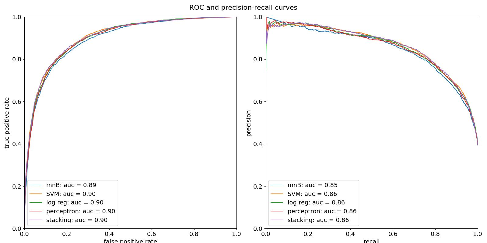

About the models
The machine learning models operate purely on natural language processing to convert the text of the channel name, video title and description into numerical data that can be analysed using statistical methods. The preprocessing consisted of first byte-pair encoding the text sample, which allows it to be broken up into small elements, referred to as
tokens, that can be numerically indexed. A token can be a whole word, a part of a word, a symbol, number or punctuation. The frequency distribution of the tokens is then calculated to produce a represent the text as a single point in a high-dimensional space, where each dimension corresponds to an individual token. The co-ordinate vector used to represent a text is used as the input data for a number of binary classification methods, where inference involves predicting whether the video belongs to one of two classes, corresponding to those with over or under 100k views:
- Multinomial naive Bayes: Bayes' theorem is used to convert the probability of data that belongs to a certain class possessing a certain property into the probability that data possessing that property belongs to that class. A naive Bayesian model further assumes the features are independent.
- Support vector machine: this method relies on the spatial distribution of the vectorised representation of a text in an abstract vector space: it roughly finds a boundary between the classes and then fits a hyperplane to separate them. The probability of a text belonging to a certain class relates to its distance from the boundary hyperplane and which side of the hyperplane it is on.
- Logistic regression: the probability of a video belonging to a certain class is modeled by a sigmoid function, with the argument being a linear combination of the co-ordinates of the vectorised form of the text data. The weights of the linear combination are fitted using maximum likelihood estimation, where the binary cross-entropy is minimised.
- Perceptron: like logistic regression, this model relies on calculating a linear combination of the co-ordinates of the vectorised text, and the prediction is decided based on whether the linear combination exceeds a certain threshold (the bias). The weights and biases are minimised using the perceptron algorithm.
- Stacking classifiers: these combine several models by using their predictions as input to a final model, called the meta-classifier. I chose logistic regression as a metaclassifier to combine the four models above.
The models were trained on a set of 31662 videos returned from a YouTube API search with the keyword 'science,' and then evaluated on a separate test set consisting of 6333 videos.
Here are the classification reports (the positive class corresponds to videos with over 100k views):
|
accuracy |
precision |
recall |
f1 |
TP |
FN |
FP |
TN |
| model |
|
|
|
|
|
|
|
|
| Multinomial naive Bayes |
0.823622 |
0.818307 |
0.711315 |
0.761070 |
1779 |
722 |
395 |
3437 |
| svm_log(TF)-IDF_calibrated |
0.832939 |
0.795092 |
0.777289 |
0.786090 |
1944 |
557 |
501 |
3331 |
| Logistic regression |
0.828359 |
0.784164 |
0.780088 |
0.782121 |
1951 |
550 |
537 |
3295 |
| Perceptron |
0.830570 |
0.791429 |
0.775290 |
0.783276 |
1939 |
562 |
511 |
3321 |
| Stacking |
0.834833 |
0.805287 |
0.767293 |
0.785831 |
1919 |
582 |
464 |
3368 |
And here are the ROC and precision-recall curves:
